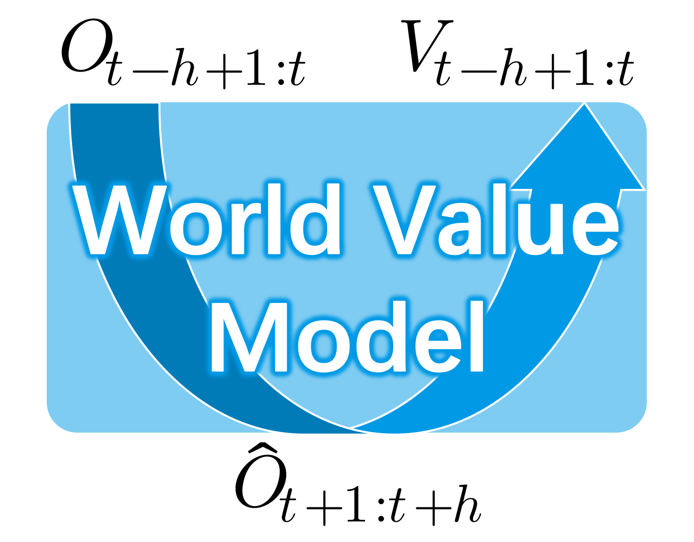
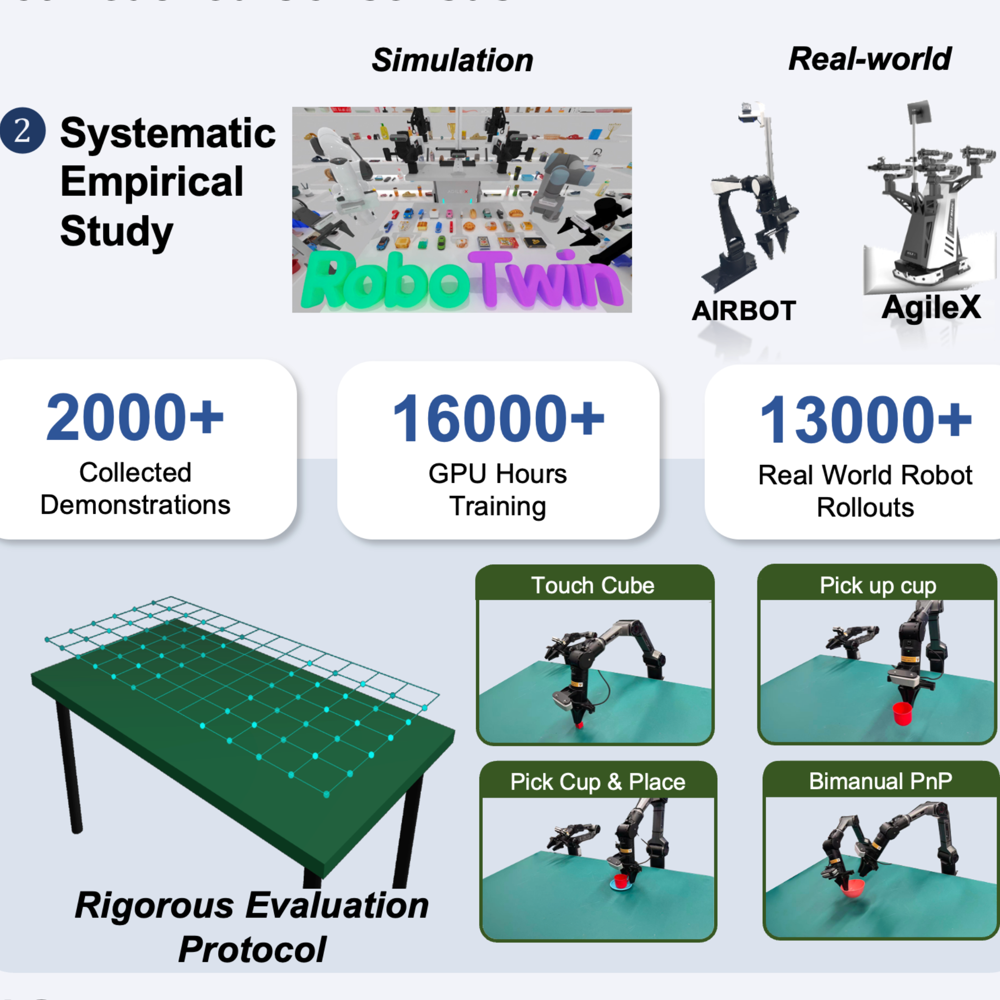
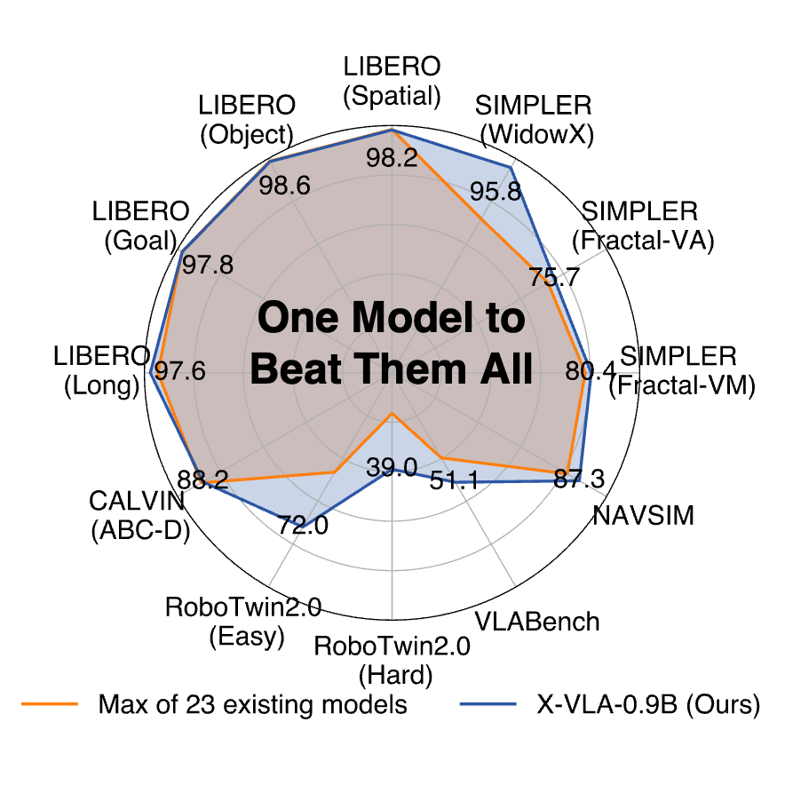
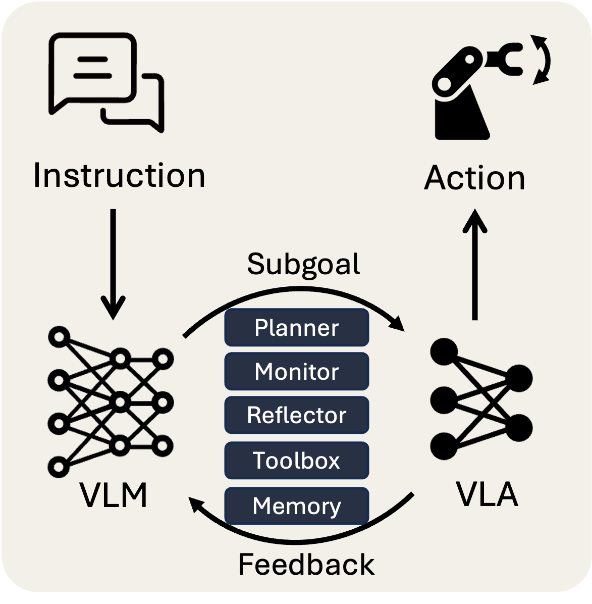
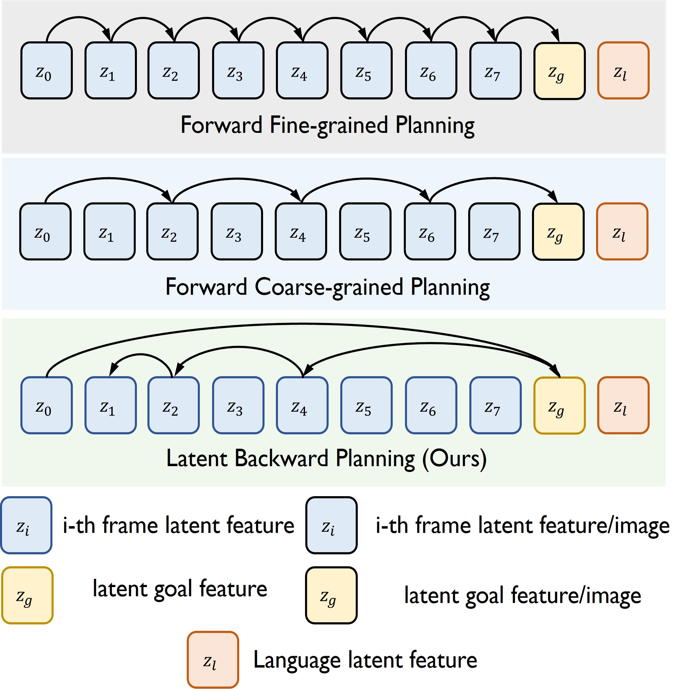
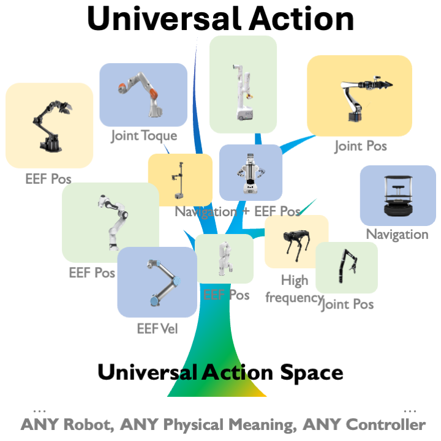
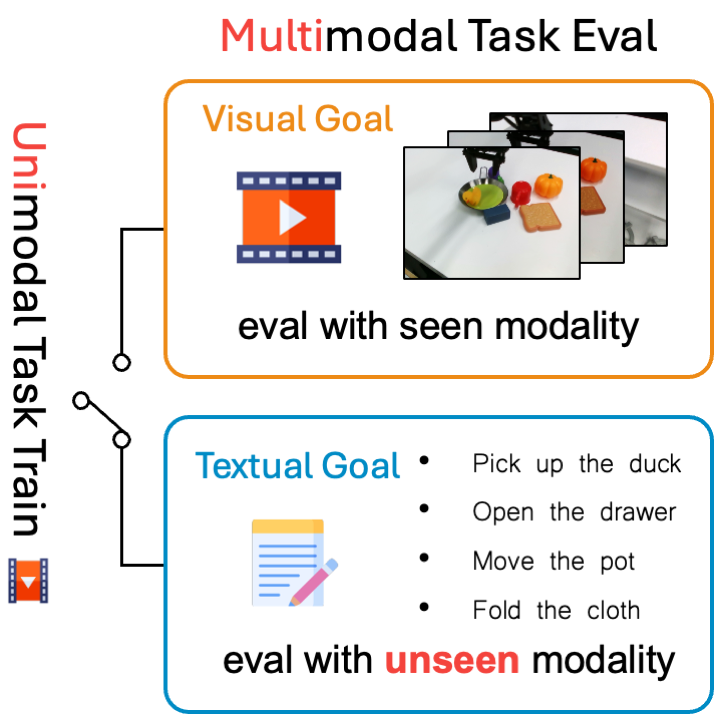

World Value Models for Robotic Manipulation
Marrying world models with value estimation.
Reality · Robotics · Reinforcement · Rewards
Currently conducting research at ByteDance Seed Robotics.
A second-year master's student at School of Advanced Manufacturing and Robotics, Peking University, advised by Professor Junzhi Yu.
Also a research intern at the Institute for AI Research (AIR), Tsinghua University, advised by Professor Xianyuan Zhan.
Prior to that, I earned my B.Eng. degree in Intelligent Automotive Engineering from the Harbin Institute of Technology (HIT).
My research interests mainly focus on building Reliable and Scalable robot learning systems.
Thanks to all collaborators and supporters, looking forward to more exciting research ahead!
My long-term vision is to build the BRIDGE between artificial intelligence and the physical world — shaping truly embodied intelligence. 🤖🧠

Marrying world models with value estimation.

A large-scale empirical study dissecting how action space design shapes policy learnability and control stability.
Positive policy + Negative policy + CFG = Controllable inference policy

A highly scalable cross-embodiment VLA model that achieves remarkable performance with a tiny model size.

An autonomous scaffolding framework to seamlessly integrate VLA and VLM into real-world embodied agents.

A lightweight visuomotor policy controls robots with latent, backward, recursive subgoals.
A novel ViDAR device with reinforcement learning-based active SLAM method.

A new embodied foundation modeling framework operating in the Universal Action Space.

An approach for training a multimodal robotic policy via only unimodal datasets.
* Equal contribution.
Outside of research, I also enjoy: